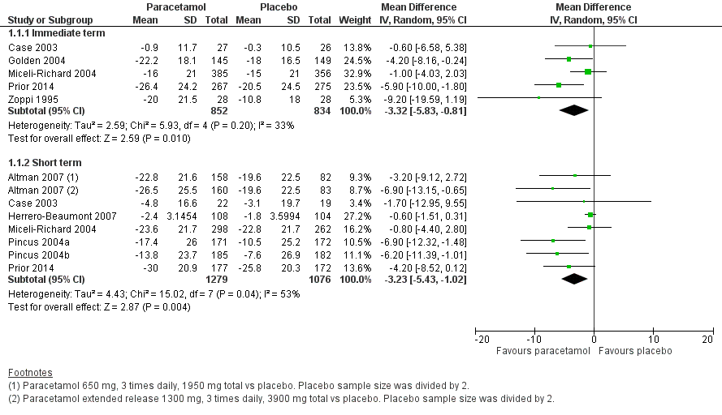
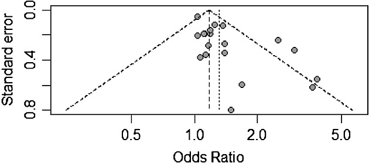

Introduction to Meta-Analysis
CMOR Lunch’n’Learn
Systematic reviews and meta-analyses
From Cochrane:
A systematic review is a study that
“attempts to identify, appraise, and synthesize all the empirical evidence that meets pre-specified eligibility criteria to answer a specific research question”Meta-analysis is the statistical combination of results from two or more separate studies
- Meta-analysis is often one part of a systematic review
(Potential) advantages of meta-analyses
- Improved precision
- Evidence on generalisability
- Resolve conflicting results from previous studies
Types of meta-analysis
- Pairwise comparisons (i.e., intervention vs. comparator; ‘standard’ meta-analysis)
- Network meta-analysis (comparing more than two interventions in a single model)
- Individual participant data meta-analysis
Before doing a meta-analysis
Do your systematic review well:
Define the review aims & scope (PICO)
Ensure your search strategy, screening, etc. is effective
Identify & summarise study characteristics
Decide whether studies are ‘similar enough’ to be grouped & synthesized
General approach to meta-analysis
Extract (or calculate) a summary statistic for each study
Calculate (weighted) average effect across all studies
Calculate the standard error of the summary effect (to derive confidence intervals and/or p-values)
Estimate heterogeneity between studies
Summarise findings graphically (usually with a forest plot)
1. Extract/calculate statistics for each study
- For dichotomous outcomes:
- Odds ratio
- Risk ratio
- Risk difference
- For continuous outcomes:
- Mean difference
- (post-intervention, change from baseline, adjusted post-intervention)
- Standardised mean difference
- Mean difference
1. Extract/calculate statistics for each study
- For ordinal outcomes:
- Usually either treated as dichotomous or continuous
- Also possible to estimate a proportional odds ratio
- For count outcomes:
- Again, usually treated as dichotomous or continuous
- Rate ratio or rate difference
- For time-to-event outcomes:
- Hazard ratio
2. Calculate weighted effect
- Generally, meta-analyses use an inverse-variance weighted method
\[\text{Weighted average} = \frac{\sum{Y_i W_i}}{\sum{W_i}}\]
where \(W_i = (1 / SE_i)^2\)
- For ratio measures, both the effects and standard errors are on the log scale
- These can be transformed back to the original scale for reporting
- There are slight variants to this general approach for some methods (particularly for dichotomous outcomes)
3. Calculate standard errors
- In the general inverse-variance method, the standard error of the weighted summary statistic is
\[\text{Standard error} = \frac{1}{\sqrt{\sum{W_i}}}\]
- Again, different formulae for some specific methods
4. Estimate heterogeneity
Heterogeneity is measured by
\(Q = \sum{W_i (Y_i - \overline{Y})^2}\)
and
\(I^2 = \text{max}\left\{\frac{Q - (k - 1)}{Q}, 0\right\}\)
Q is a test statistic following a chi-squared distribution, and I2 is interpreted as the proportion of total variance in study estimates due to heterogeneity rather than sampling error
- NOTE: I2 can be very uncertain (imprecise) when the number of studies is small
5. Summarise findings graphically
Meta-analyses are usually illustrated using a forest plot
A forest plot displays effect estimates for both individual studies and the overall meta-analysis result
Each study is represented by a square (usually) at the point estimate, and horizontal lines extending to bounds of the confidence interval
- The size of the block indicates the weight assigned to that study in the meta-analysis (roughly proportional to sample size)
The summary result is presented as a diamond at the bottom, centred on the meta-analysis point estimate and with width showing the confidence interval

Assessing small-study bias and publication bias
- Small sample bias: small studies may show larger intervention effects than larger studies
- Non-reporting/non-publication bias
- Poor methodological quality
- Mechanistic vs. pragmatic designs
- A ‘funnel plot’ can help detect this

Software
- Cochrane RevMan
- Manages all stages of the systematic review process, from design to data extraction, analysis, and visualiation
- Free for those doing Cochrane reviews, subscription for everyone else
- R: there are several packages for meta-analysis
- See the Meta-Analysis Task View:
https://cran.r-project.org/view=MetaAnalysis metaforis a comprehensive package with functions for converting published results to common summary statistics, fitting inverse-variance weighted and related models, forest and funnel plots, heterogeneity measures, and diagnostic statistics (among others)
- See the Meta-Analysis Task View:
References
Cochrane Handbook for Systematic Reviews of Interventions
https://training.cochrane.org/handbook/current- Details of the statistical methods: https://documentation.cochrane.org/revman-kb/files/210600101/210600103/1/1654774257333/Statistical_methods_in_revman.pdf
Egger M, Smith GD, Altman DG. Systematic Reviews in Health Care: Meta-Analysis in Context, 2nd Ed. London, UK: BMJ Publishing Group. 2001.
https://doi.org/10.1002/9780470693926Jin Z-C, Zhou X-H, He J. Statistical methods for dealing with publication bias in meta-analysis. Statistics in Medicine 2015;34(2):343-360
https://doi.org/10.1002/sim.6342metaforR package https://wviechtb.github.io/metafor/